Videojuego de acción y combate en 3D enfocado en el enfrentamiento táctico contra un jefe mediante mecánicas de tiro con arco.
El Despertar del Prisma es una experiencia en 3D en la que el jugador toma el rol de un arquero frente a un jefe final.
El objetivo principal es mantener la distancia y evitar cualquier contacto físico con el enemigo mientras calculas la trayectoria de tus disparos para derribarlo antes de que se agote el tiempo o tu salud.
Unity, C#, Maya y Adobe Illustrator
Videojuego 3D
Aplicación interactiva
Para el desarrollo de este escenario y combate, se integraron assets 3D de apoyo para los entornos, el enemigo y el personaje principal, permitiendo enfocar la programación en la lógica del sistema de combate, colisiones, físicas de proyectiles e interfaz gráfica.
Modelado Propio: El modelo 3D del Personaje Secundario fue diseñado y modelado de forma propia utilizando Autodesk Maya y Adobe Illustrator.
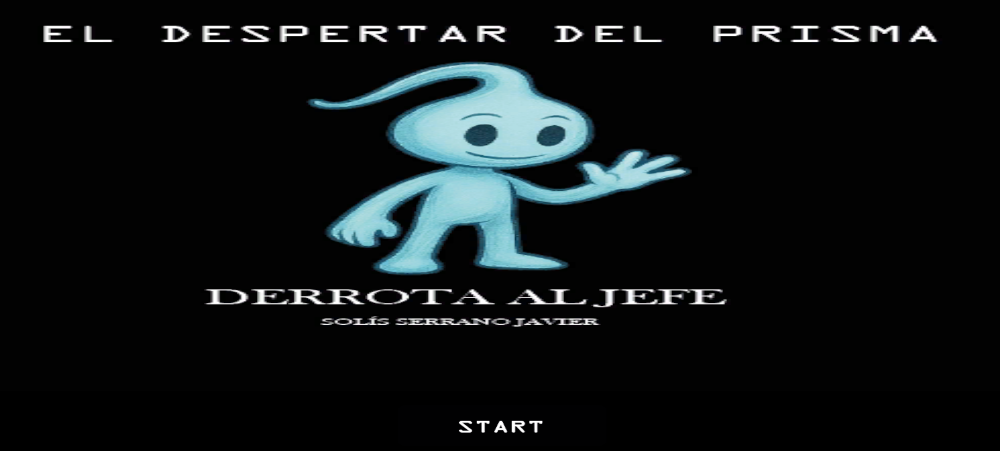
Menú Principal
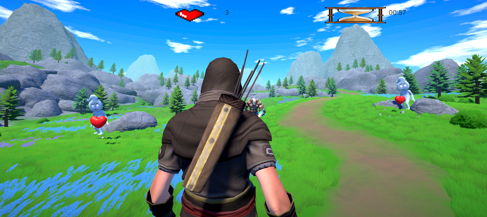
Vista de Entrada
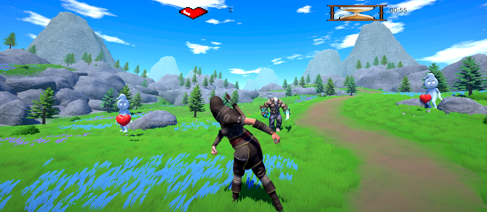
Apunte y Disparo
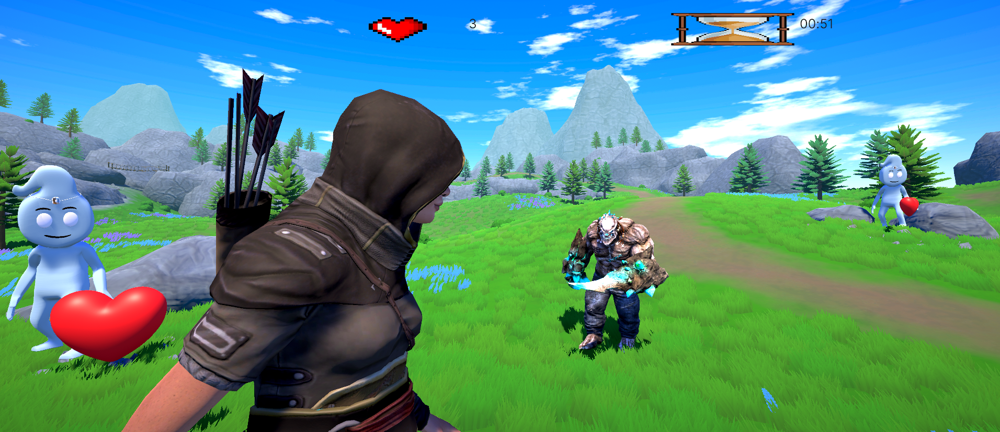
Perspectiva Cercana
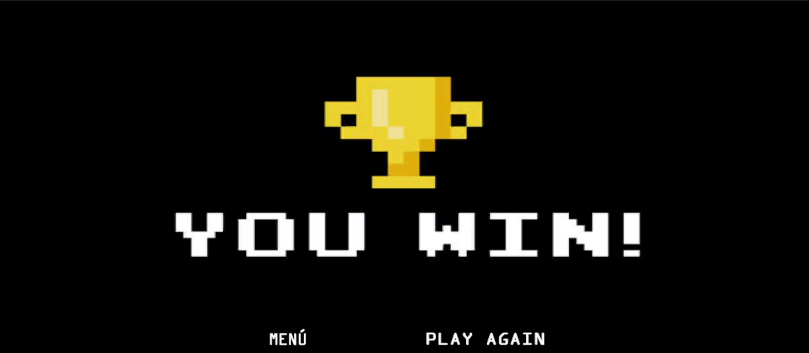
Victoria
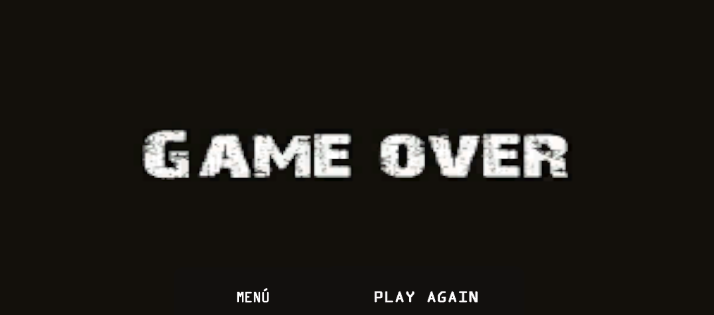
Derrota
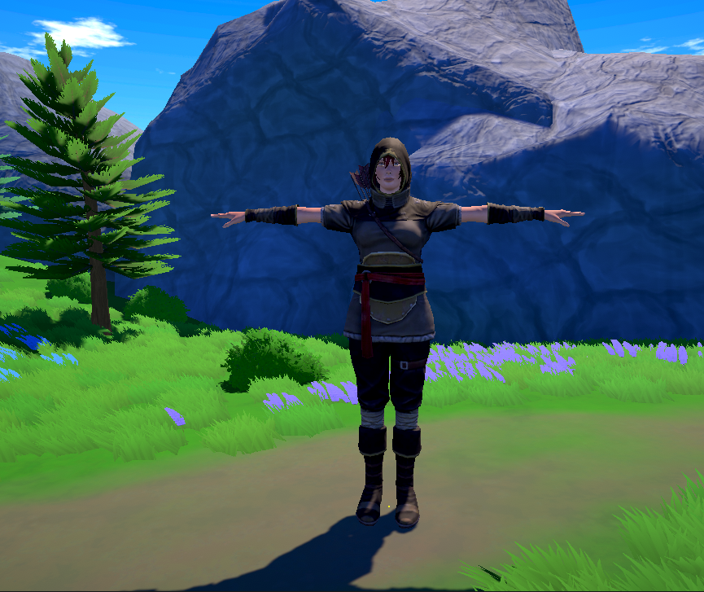
Personaje Principal
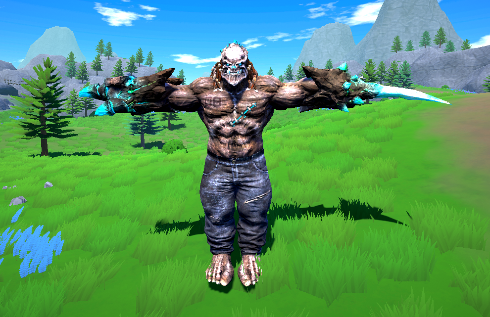
Jefe Final
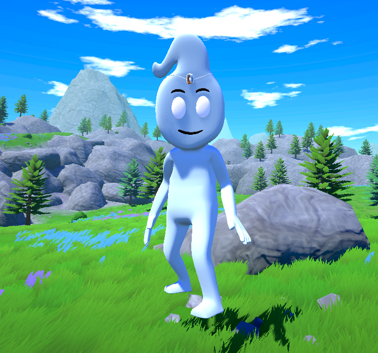
Personaje Secundario
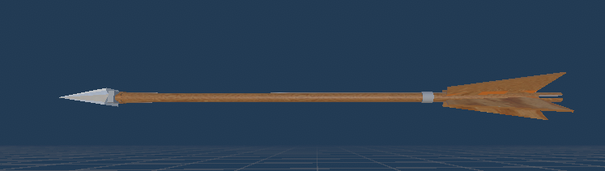
Proyectil Flecha
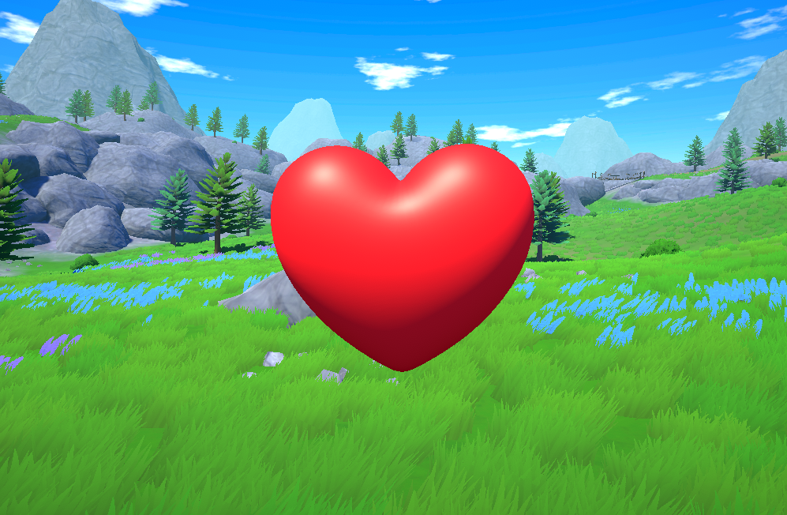
Ítem de Vida